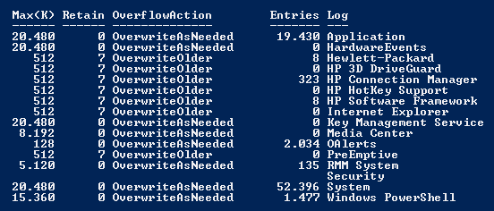
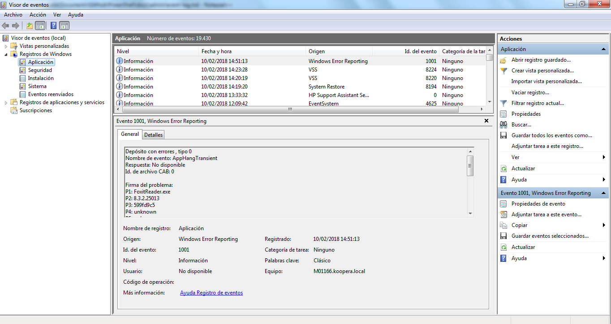
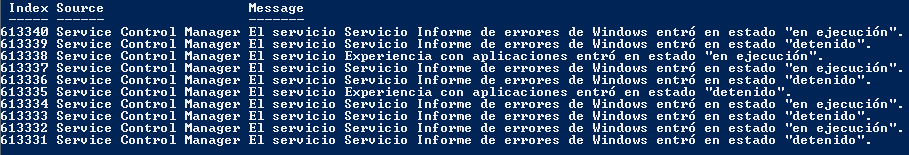
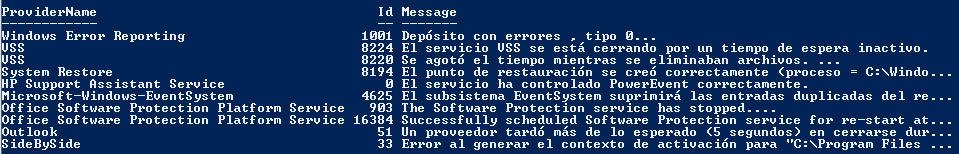
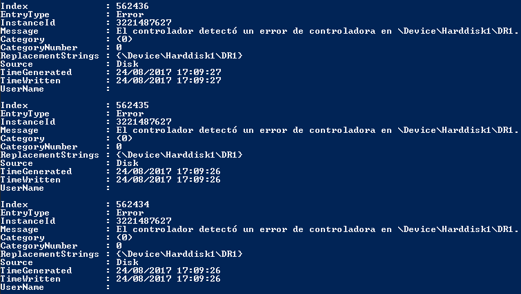

Los logs de eventos son el pilar de la monitorización de sistemas Win. Para trabajar con los logs PS proporciona dos llamadas, los cmdlets Get-EventLog y Get-WinEvent.
Listado de todos los logs de eventos
Fuente: List-EventLogs.ps1
Get-EventLog -List
Podemos añadir el parámetro -ComputerName si queremos interactuar con los logs de un equipo remoto.
En mi caso el cmdlet produce la siguiente salida:

Un cmdlet similar para Win Vista o posteriores es Get-WinEvent que además de los eventos clásicos también captura eventos de aplicaciones y servicios.
PS> Get-WinEvent -ListLog * | Select LogName,RecordCount
Si lo que queremos es usar el visor de eventos gráfico de Windows podemos lanzarlo desde de PS con el cmdlet Show-EventLog.

Obtener los logs de eventos más recientes
Usamos el parámetro -Newest como en el siguiente ejemplo para obtener los 10 últimos eventos del sistema.
Fuente: Get-Newest10.ps1
Get-EventLog System -Newest 10 | Format-Table Index,Source,Message -Auto

Pasamos la salida del cmdlet Get-EventLog usando una tubería o pipe a el cmdlet Format-Table para formatear la salida como una tabla con las columnas o propiedades del objeto que deseemos visualizar.
Podemos hacer los mismo con el cmdlet Get-WinEvent usando el parámetro -MaxEvents:
PS> Get-WinEvent Application -MaxEvents 10 | Format-Table ProviderName,Id,Message -Auto

Buscar entradas del log de eventos con un texto específico
PS > Get-EventLog System | Where-Object { $_.Message -match "disk" }
Como el cmdlet Get-EventLog retorna una lista de objetos que representan entradas del log de eventos podemos pasarlo por un pipe y usar el cmdlet Where-Object para acceder a los atributos de los objetos.
Para obtener una lista detallada:
PS> Get-EventLog System | Where-Object { $_.Message -match "disk" } | Format-List

Obtener y filtrar log de eventos
Por ejemplo si queremos obtener una entrada específica:
PS > Get-EventLog System | Where-Object { $_.Index -eq 2920 }
Para obtener una vista detallada:
PS > Get-EventLog System | Where-Object { $_.Index -eq 2920 } | Format-List
Usando el cmdlet Get-WinEvent con el parámetro -FilterHashtable (hash table o matriz asociativa) permite filtrar por LogName, Provider, Name, Path, Keywords, ID, Level, StartTime, EndTime y UserID. El siguiente ejemplo fitra los logs de eventos críticos y de error en el log de eventos del sistema (System):
Get-WinEvent -FilterHashtable @{ LogName = "System"; Level = 1,2 }
Get-WinEvent y consultas XML
Fuente: Get-WinEvent-XMLQuery.ps1.
## Gets all Critical and Error events from the last 24 hours
$xml = @'
<QueryList>
<Query Id="0" Path="System">
<Select Path="System">
*[System[(Level=1 or Level=2) and TimeCreated[timediff(@SystemTime) <= 86400000]]]
</Select>
</Query>
</QueryList>
'@
Get-WinEvent -FilterXml $xml
Backup del log de eventos
A menudo querremos guardar la información del log de eventos para analizarlos más tarde. Con la utilidad wevtutil.exe podemos guardar el log de eventos en un fichero.
PS > C:\Windows\System32\wevtutil.exe epl System c:\temp\system.bak.evtx
Después de exportar el log de eventos podemos usar el cmdlet Get-WinEvent para realizar consultas.
PS > Get-WinEvent -FilterHashtable @{Path="c:\temp\system.bak.evtx"; Level=1,2 } -MaxEvents 2 | Format-Table -Auto